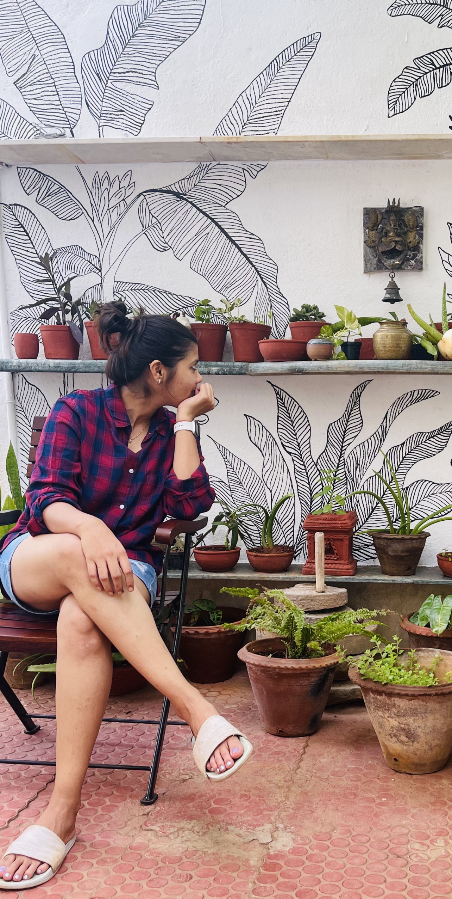

Discover
Research into clients, competitors and users to uncover real, unmet needs.

About
I started as an illustrator — drawing the world by hand, learning to see in composition and detail. That eye led me into fashion, where I spent eight years shaping garments and brand stories, learning what makes something feel considered rather than just finished.
Today I bring that same instinct to UX: using technology to make experiences simple, human and easy to trust — research-led, strategy-first, and crafted with care all the way to the final pixel.
How I Work — Double Diamond
Research into clients, competitors and users to uncover real, unmet needs.
Synthesis into empathy maps, personas, POV statements and a sharp problem.
Crazy-8 sketches, IA, flows and wireframes — iterated and user-tested.
A cohesive style guide and a polished, high-fidelity prototype.
Capabilities